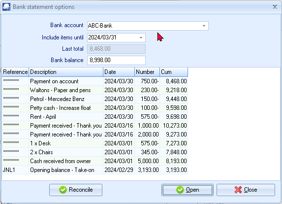
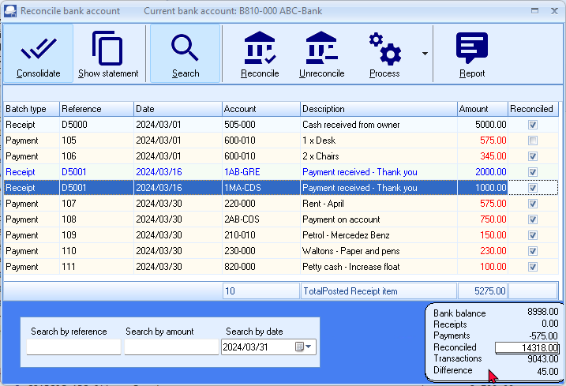
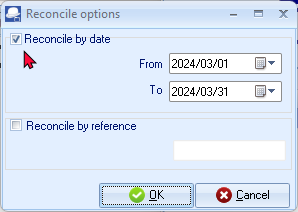
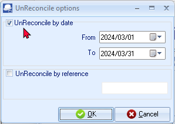
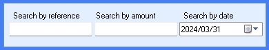

Reconciling your cashbook with bank statements
|
|
Bank import plugin - Bank Reconciliations Plugin Manual - BankImport Plugin Manual - Shop - The Bank import plugin is included in the osFinancials5/TurboCASH5 subscription. The Bank import plugin will import bank transactions and save you hours of data entry. You can simply link transactions to your debtors, creditors or other accounts. And with a simple mouse click link the payments to the right invoices. Needs to be activated on the Setup ribbon, select Setup → System parameters. |

Once your receipt transactions have been entered in the Receipts journal and the payment transactions have been entered in the Payments journal, for a specific month or period, you may reconcile your cashbook (payments and receipts batches) with the bank statement. Before you start to reconcile, ensure the bank statement is received by post, or fetched from your bank or financial institution.
|
|
If you are registered for online banking, you may download a bank statement from your bank or financial institution, and import a bank statement which is saved in a valid file format on your system. |

If you have any repeating transactions set up for your receipts batch and payments batch in Edit → Repeating transactions (Default ribbon), you need to copy them to the normal batch as they will not reflect in the cashbook for a specific period when doing the Bank reconciliation. Examples of such entries in the receipts batch would be amounts (debit orders) paid into your bank account on a monthly basis. Examples for the payments batch would be amounts (debit orders) paid out of your bank account on a monthly basis.
|
|
osFinancials5 allows you to reconcile your Bank accounts, before you update or post your Payments and Receipts Journals to the ledger. This will allow you to easily correct any errors found (edit transactions, insert transactions which are omitted, delete transactions which are entered twice, reverse all the transactions if entered on the incorrect side, etc.), when doing the bank reconciliation. You may also enter any transactions (such as bank charges and interest), which are listed in your bank statement, but do not appear in your cashbook. You may post or update your batches after your reconciliation is completed, unless you are working on a "Client Machine" in a network environment. |

To do a Bank reconciliation using a printed bank statement:
- Obtain the Bank statement for the bank account you need to reconcile. The following is an example of a printed bank statement:

- On the Default ribbon, select Cash / Bank (Alt + F2). The "Bank statement options" screen will list all transactions to the selected bank account up to the date specified:

- Select and enter the following:
- Bank account - Select the cashbook you wish to reconcile.
- Include Items Until - Enter or select the date until which you would like to include cashbook transactions to be reconciled with your Bank Statement.
- Last total - The last total of the bank account will be displayed.
- Bank Balance - Enter the closing balance of your bank statement.
- Click on the Open button and the "Reconcile bank account" screen displaying the name of your selected account is displayed:

|
|
This screen will list all the transactions Receipts and Payments Journals (batches) for the selected cashbook for the selected period. These entries represent your unreconciled items. |
- If you have more than one transaction with the same reference number (deposit or cheque number), you may click on the Consolidate icon.
|
|
This will group the transactions with the same reference number together, and it will display one amount which can then be matched with the bank statement. |
- You need to mark the item appearing on your bank statement as reconciled in the last column of this screen. To do this, you need to select the item and click on the reconciled field.
|
|
You may also use the Up arrow or Down arrow and the Spacebar on your keyboard to mark an item as reconciled or not. |
|
|
The items displayed on your bank statement also need to be manually ticked off on the printed bank statement. |
|
|
You will find that not all the transactions would be selected or marked on the Reconcile Bank account screen and the bank statement. These unmarked transactions or items are as follows:
Once all these transactions are entered, or if any errors are found at this stage, and are corrected, you need to access the Reconcile Bank account screen again and mark the corresponding transactions.
|

- Once this is done and there is no difference displayed on the bottom left-hand corner of the Reconcile Bank account screen, click on the Process icon.
|
|
This will group the transactions with the same reference number together, and it will display one amount which can then be matched with the bank statement. |
- Click on the Reconciliation icon to print a bank reconciliation report. This report will reflect the outstanding deposits and payments (cheques), and will also display any differences.
- Click on the Close button on the title bar to close or exit the Bank reconciliation screen.
|
|
If this report does not reflect any differences between the cashbook and the Bank balance, it is said to be "in balance" as at a specified date. This report will also enable you to determine whether bank charges and other debits or credits appearing on your bank statement, are recorded in your cashbook for the selected period. |
|
|
If you access or return to the receipts and payments journal, to add or to edit any transactions, the transactions (which are marked or selected as reconciled items or transactions) will be displayed in a blue font colour. |
Speed buttons - Bank reconciliations
The following speed buttons (icons) are available to help you to reconcile or unreconcile your cashbook with the bank statement:
- Consolidate - Click to consolidate all entries in the selected cashbook with the same reference number.
|
|
If an entry is selected, for which other entries with the same reference number exists, all these entries will be displayed in a different colour (blue). |
The total amount of all these entries with the same reference number will be displayed as a Posted Payments item, or Unposted Payments item, or Posted Receipts item, or an Unposted Receipts item.
If you click on this icon again to turn it off, all entries will be listed as individual entries with the same reference number and will not be consolidated.
- Show statement - Click to split the screen in two sections. The top section will display the details of the Receipts and Payments batches while the bottom half of this screen will display the details of the transactions displaying on the bank statement.
|
|
Bank import plugin - Bank Reconciliations Plugin Manual - BankImport Plugin Manual - Shop - The Bank import plugin is included in the osFinancials5/TurboCASH5 subscription. The BankOnline Plugin - Not implemented at this stage. You may use the BankImport Plugin to import bank statements (if the "Default bank reconciliation method" field is not selected on Setup → Setup → System parameters ). |
If you click on this icon again, the "Bank statement transactions" section will not be displayed.
- Reconcile - Click to automatically reconcile all payments and receipts for a specified period.

|
|
If you select the "Reconcile by reference" field, you will not be able to select the date from and to. This will allow you to automatically reconcile payments and receipts for a specified reference number. |
- UnReconcile - Click to automatically unreconcile all payments and receipts for a specified period.

|
|
If you select the "UnReconcile by reference" field, you will not be able to select the date from and to. This will allow you to automatically unreconcile reconciled payments and receipts for a specified reference number. |
- Search - Click to launch a screen (displayed on the bottom of the reconciliation screen) where you may enter any of the following to search for an item:

- Search by reference - You need to enter a valid reference number. The date and amount for the specific transaction will be displayed.
- Search by amount - You need to enter the amount and the entry will be selected. The reference and date for the specific transaction will be displayed.
- Search by date - You need to enter a valid date within the periods and the entry will be selected. The reference and amount for the specific transaction will be displayed.
- Report – Click to launch the "Bank account recon options" screen on which you may print a bank reconciliation report.